WMS RFID SUITE
Buku Panduan Penggunaan
Aplikasi Scan RFID & Barcode untuk Handheld
Chainway C72 & Zebra MC33 / MC3300x
Versi Aplikasi 1.5.x • Edisi Oktober 2026
Dokumen internal — untuk operator gudang dan tim IT
Daftar Isi
| 1 | Pengenalan Aplikasi |
| 2 | Memulai: Instalasi & Pemilihan Perangkat |
| 3 | Layar Utama (Scan) |
| 4 | Jika Pengiriman Gagal & Riwayat Log |
| 5 | Kualitas Sinyal (Quality) |
| 6 | Mode Barcode |
| 7 | Mode Pengiriman: WO vs Register |
| 8 | Penggantian RFID (Replacement) |
| 9 | Scan Latar Belakang & Bulatan Mengambang |
| 10 | Backup CSV Lokal |
| 11 | Update Aplikasi Otomatis |
| 12 | Panduan Lengkap Pengaturan |
| 13 | Bahasa Aplikasi |
| 14 | Pemecahan Masalah (Troubleshooting) |
1. Pengenalan Aplikasi
WMS RFID Suite adalah aplikasi Android untuk membaca tag RFID UHF dan barcode
menggunakan handheld gudang, lalu mengirim hasilnya secara otomatis ke sistem Warehouse
Management (WMS). Satu aplikasi yang sama dapat dipasang di dua merek perangkat berbeda:
- Chainway C72 — handheld dengan reader UHF bawaan
- Zebra MC33 / MC3300x — handheld dengan reader UHF bawaan
Fitur utama yang tersedia:
- Scan RFID banyak tag sekaligus, cukup tahan tombol trigger fisik
- Indikator Kualitas sinyal per tag (Kuat / Sedang / Lemah) — menggantikan angka RSSI mentah yang sulit dibaca operator
- Mode Barcode — beralih dari RFID ke pemindai barcode 1D/2D dengan satu tombol di Pengaturan
- Dua alur pengiriman data: WO dan Register, dengan format data yang sama ke server
- Chip konfigurasi di Layar Scan — mode, server, RR Type, dan Factory Code yang aktif selalu terlihat sebelum scan
- Nada hasil kirim — berhasil dan gagal terdengar berbeda, jadi tidak perlu melihat layar
- Tag yang belum terkirim tidak pernah terhapus diam-diam, dan setiap pengiriman bisa dikirim ulang dari Riwayat Log
- Tetap bisa scan walau aplikasi di latar belakang, dengan bulatan status mengambang di layar
- Backup otomatis ke file CSV di perangkat, sebagai jaring pengaman saat WiFi gudang bermasalah
- Update aplikasi otomatis lewat internet, tanpa kabel data dan tanpa laptop
- Bahasa Indonesia dan Inggris, bisa diganti kapan saja
Untuk siapa dokumen ini? Bab 1–11, 13, dan 14 ditulis untuk operator lapangan
sehari-hari. Bab 12 (Pengaturan) lebih rinci dan biasanya hanya disentuh oleh admin/IT saat
konfigurasi awal sebuah handheld.
2. Memulai: Instalasi & Pemilihan Perangkat
Aplikasi dipasang sekali oleh admin/IT (lewat file APK atau update otomatis). Setelah dipasang
dan dibuka untuk pertama kali, aplikasi akan menanyakan jenis perangkat yang digunakan:
1 Pilih Chainway C72 jika handheld yang dipakai buatan Chainway.
2 Pilih Zebra jika handheld yang dipakai adalah MC33 atau MC3300x.
Penting: Pilihan ini hanya ditanyakan sekali dan disimpan khusus untuk perangkat
tersebut — terpisah dari Pengaturan lain, sehingga tombol Reset di Pengaturan tidak
akan pernah mengubahnya secara tidak sengaja. Untuk mengganti pilihan ini, aplikasi perlu dipasang
ulang atau datanya dihapus lewat menu Setelan Android → Aplikasi.
Setelah jenis perangkat dipilih, aplikasi langsung masuk ke Layar Utama (Scan) dan siap
digunakan. Semua pengaturan lain (URL server, mode WO/Register, dsb.) diisi lewat menu
Pengaturan — lihat Bab 12.
3. Layar Utama (Scan)
Ini adalah layar yang paling sering dipakai operator sehari-hari.
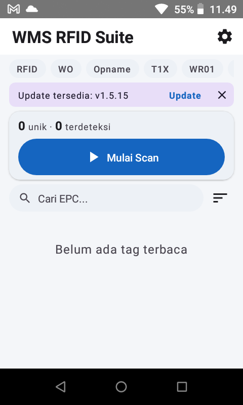
Layar Scan dalam keadaan kosong, siap memulai
Bagian-bagian layar
Tampilan dibuat ringkas agar daftar tag mendapat ruang sebanyak mungkin — di layar
480×800 (Zebra MC33) minimal 5 baris tag terlihat tanpa perlu menggeser layar.
- Chip konfigurasi — deretan label kecil tepat di bawah judul yang menampilkan
pengaturan yang sedang aktif: jenis scan (RFID / Barcode, ungu untuk Barcode),
WO / Register, Opname (jika aktif), Penggantian (jika aktif, berwarna
oranye karena cara scan-nya berbeda total), RR Type, Factory Code, dan nama pendek
server (mis. wms.suite, product.suite). RR Type atau Factory Code yang kosong tampil
merah. Jika tidak muat, deretan ini bisa digeser ke samping. Ketuk deretan ini untuk membuka
Pengaturan.
- Kartu ringkasan — satu baris berisi jumlah tag unik (tag berbeda) dan
terdeteksi (jumlah total pembacaan), serta di sebelah kanan waktu scan terakhir beserta
status pengiriman (Mengirim…, ✓ Terkirim hijau, atau ✗ merah).
Jumlah unik selalu menghitung semua tag, walau kotak Cari EPC sedang menyaring daftar.
- Mulai Scan / Stop Scan — tekan tombol di layar, atau tahan tombol trigger fisik di
handheld. Melepas trigger sama seperti menekan Stop. Tombol di layar bekerja dengan cara
ketuk untuk mulai, ketuk Stop untuk berhenti; trigger fisik dengan cara tahan untuk scan,
lepas untuk berhenti.
- Scan Baru vs Lanjutkan — begitu ada tag terbaca, tombol berubah jadi dua pilihan:
- Scan Baru — menghapus semua hasil sebelumnya dan langsung mulai sesi baru dari
nol. Menekan trigger fisik saat masih ada tag di layar sama dengan Scan Baru.
- Lanjutkan — tetap menyimpan tag yang sudah ada dan melanjutkan scan (berguna
untuk menyisir area luas tanpa kehilangan hasil sebelumnya)
- Status pengiriman — setelah scan berhenti, daftar tag otomatis dikirim ke server,
dan hasilnya tampil di kartu ringkasan. Jika gagal, muncul pesan di bawah tombol beserta tombol
Kirim Ulang (lihat Bab 4).
- Nada hasil kirim — jika Suara aktif, terdengar "tit-tit" pendek saat
terkirim, dan tiga bunyi rendah saat gagal, sehingga operator tahu hasilnya tanpa melihat
layar — juga saat aplikasi sedang di latar belakang (Bab 9).
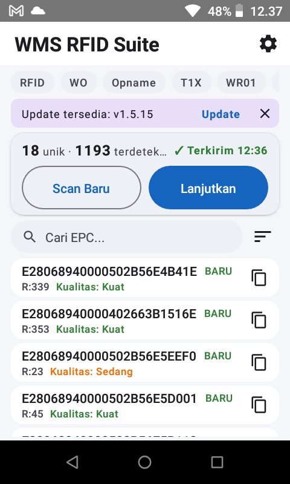 Setelah scan: ✓ Terkirim di kartu ringkasan |
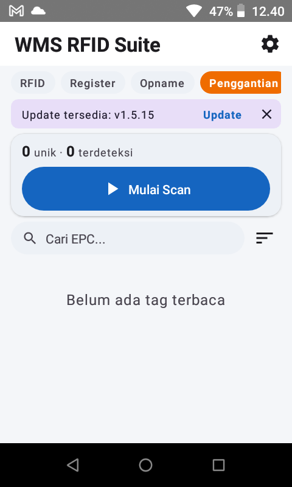 Chip konfigurasi — Penggantian aktif (oranye) |
Tag belum terkirim tidak terhapus diam-diam
Jika pengiriman terakhir gagal (WiFi putus, server error, data ditolak server, dsb.) dan
tag masih ada di layar, menekan Scan Baru atau trigger fisik tidak langsung menghapus tag,
melainkan muncul pertanyaan:
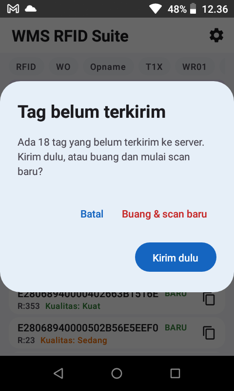
"Ada 18 tag yang belum terkirim ke server"
- Kirim dulu — mengirim ulang tag tersebut (sama dengan tombol Kirim Ulang); tag
tetap di layar sampai berhasil
- Buang & scan baru — tag dibuang. Jika dialog muncul karena trigger fisik,
daftar hanya dikosongkan — tahan trigger lagi untuk scan. Jika dari tombol Scan Baru, scan
baru langsung dimulai.
- Batal — tidak terjadi apa-apa
Jika pengiriman terakhir berhasil, Scan Baru dan trigger langsung memulai scan baru tanpa
pertanyaan. Selama status masih Mengirim…, tombol Scan Baru nonaktif dan trigger
diabaikan sampai hasilnya keluar.
Daftar tag
Setiap baris pada daftar tag menampilkan:
- Kode EPC tag (kode unik tag RFID)
- R: jumlah berapa kali tag ini terbaca dalam sesi berjalan
- Kualitas — lihat penjelasan lengkap di Bab 5
- Label BARU atau LAMA — menandai apakah tag ini baru pertama kali terbaca
pada sesi ini, atau sudah ada sebelumnya
- Ikon salin — ketuk untuk menyalin kode EPC tag tersebut
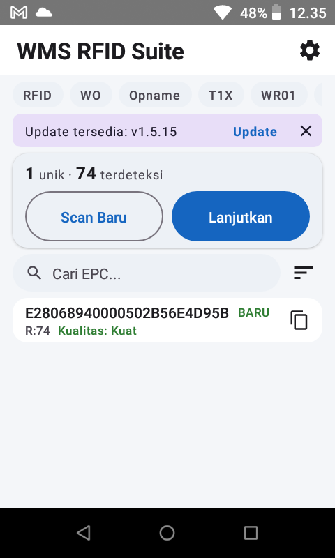
Baris tag: kode EPC, jumlah baca (R), dan label Kualitas
Di atas daftar tag terdapat kotak Cari EPC untuk menyaring tag berdasarkan sebagian kode
EPC, dan ikon urutkan (≡) untuk mengubah urutan: terbaru, EPC (A–Z), jumlah baca
terbanyak, atau Kualitas terbaik.
4. Jika Pengiriman Gagal & Riwayat Log
Sebelumnya, pesan kegagalan menampilkan balasan mentah dari server apa adanya — teks
teknis, dan bisa sangat panjang. Sekarang pesan ini disederhanakan menjadi satu baris yang mudah
dibaca, diawali jumlah tag yang belum terkirim — misalnya "18 tag belum terkirim —
Terjadi kesalahan sistem, silakan hubungi Tim WMS" — dengan tombol Kirim Ulang di
sebelahnya. Pesan ini hanya muncul selama tag tersebut masih ada di layar; begitu daftar
dikosongkan, pesannya ikut hilang.
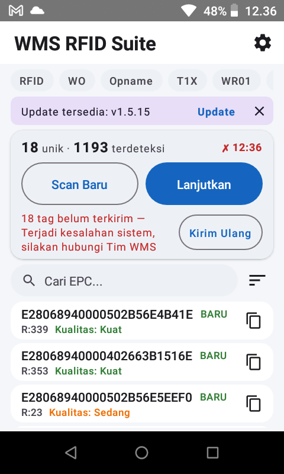 Kode 500: pesan umum (merah) |
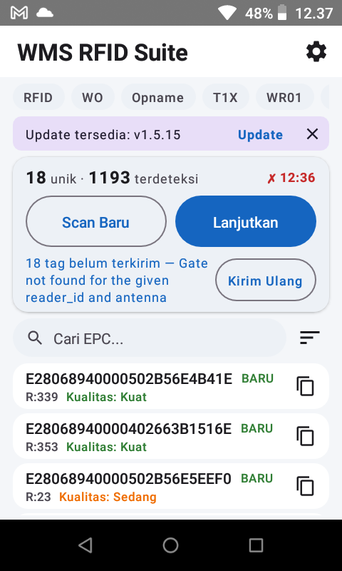 Kode lain: pesan spesifik (biru) |
- Kode 500 — disederhanakan jadi satu kalimat tetap: "Terjadi kesalahan sistem,
silakan hubungi Tim WMS", ditampilkan merah. Penyebab asli kode 500 biasanya adalah bug
di sistem backend, bukan sesuatu yang bisa ditindaklanjuti operator di lapangan, sehingga teks
mentahnya sengaja tidak ditampilkan di sini.
- Kode selain 500 — hanya menampilkan pesan spesifik dari server (tanpa kode HTTP
maupun format teknis lainnya), ditampilkan biru, karena biasanya berupa pesan validasi yang
jelas dan berguna dibaca apa adanya.
Menyederhanakan pesan kode 500 memang sengaja menyembunyikan detail teknis dari layar —
tapi detail itu tidak hilang. Setiap percobaan pengiriman (berhasil maupun gagal — RFID,
barcode, maupun penggantian RFID) tetap dicatat lengkap di Pengaturan → Riwayat Log,
sehingga admin/Tim IT tetap bisa melihat penyebab teknis sebenarnya di balik pesan umum tersebut.
Riwayat Log & Kirim Ulang
Pengaturan → Riwayat Log menyimpan 30 percobaan pengiriman terakhir, yang terbaru
di atas. Setiap entri menampilkan label jenis pengiriman (mis. RFID · WO ·
Opname, Barcode · WO, Penggantian), status Terkirim/Gagal, waktu, dan
jumlah tag/kode.
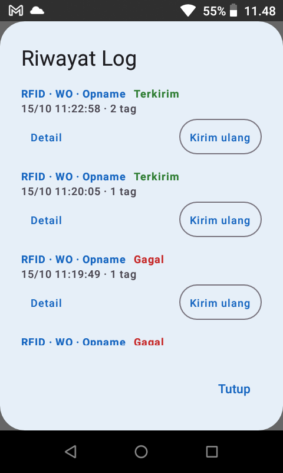 Daftar riwayat |
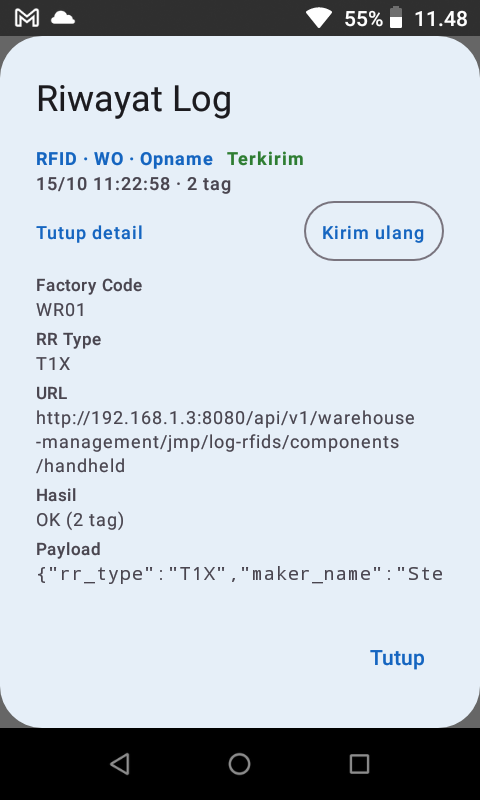 Detail: Factory Code, RR Type, URL, hasil, data yang dikirim |
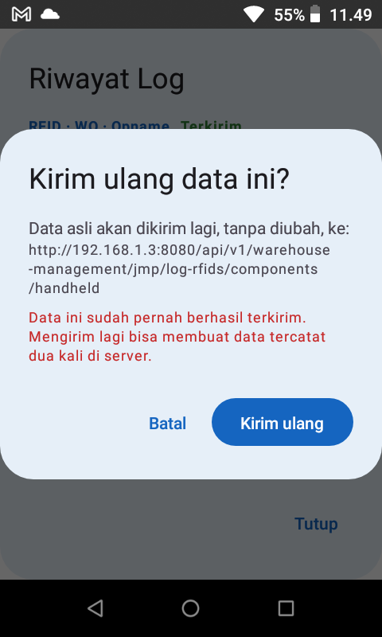 Konfirmasi kirim ulang |
- Detail — menampilkan Factory Code dan RR Type yang dipakai saat itu, alamat
server tujuan, hasil lengkap dari server (atau pesan error teknisnya), dan data persis yang
dikirim.
- Kirim ulang — mengirim data asli yang sama persis ke alamat yang sama,
bukan berdasarkan pengaturan yang sedang aktif sekarang. Sebelum mengirim selalu ada konfirmasi;
untuk entri yang dulu berhasil, ada peringatan merah bahwa data bisa tercatat dua kali di
server. Hasilnya dicatat sebagai entri baru bertanda "Kirim ulang dari [waktu]".
- Tombol Kirim ulang tidak tersedia untuk penggantian RFID yang sudah berhasil (tag lama sudah
diganti di server), maupun untuk entri lama dari versi aplikasi sebelumnya.
Berguna misalnya setelah tag di layar sempat dibuang dengan Buang & scan baru:
datanya masih bisa dikirim ulang dari sini.
5. Kualitas Sinyal (Quality)
Sebelumnya, setiap baris tag menampilkan angka RSSI mentah (misalnya "-58 dBm"), nomor antena,
dan waktu terakhir terbaca. Operator di lapangan sulit memaknai angka-angka ini, sehingga
sekarang digantikan dengan satu label sederhana: Kualitas.
Kuat (hijau) |
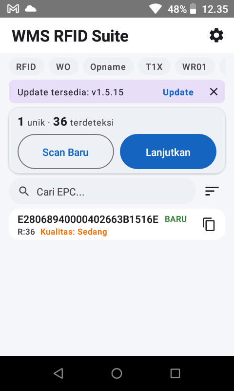 Sedang (kuning/oranye) |
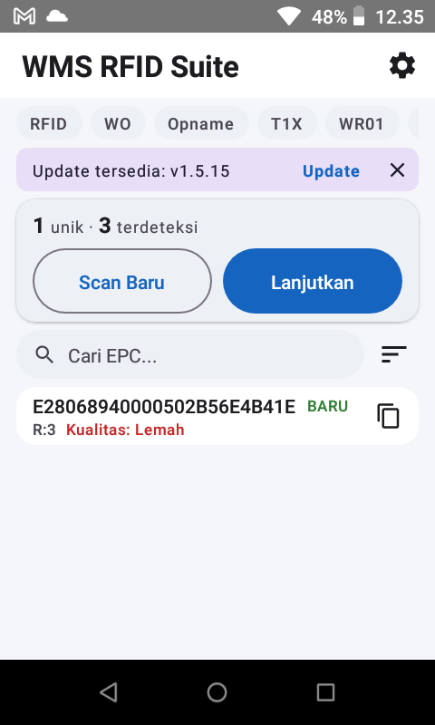 Lemah (merah) |
| Label | Warna | Artinya bagi operator |
|---|
| Kuat | Hijau | Sinyal tag sangat baik dan sudah terbaca berkali-kali — posisi tag ideal, hasil paling dapat diandalkan |
| Sedang | Kuning/oranye | Sinyal cukup, tapi mungkin perlu didekatkan lagi ke reader untuk hasil lebih meyakinkan |
| Lemah | Merah | Sinyal lemah dan/atau baru terbaca sekali — sebaiknya dekatkan tag ke handheld dan scan ulang |
Catatan: Kualitas dihitung otomatis dari kekuatan sinyal (RSSI) dan jumlah berapa kali tag
tersebut terbaca — keduanya digabung menjadi satu penilaian. Ambang batas persisnya sengaja
tidak dipublikasikan dan tidak ditampilkan di aplikasi maupun dokumen ini.
6. Mode Barcode
Selain RFID, aplikasi ini juga bisa dipakai untuk memindai barcode 1D/2D menggunakan
pemindai bawaan handheld. Mode ini diaktifkan dari menu Pengaturan → Mode Scan, dan
secara default aplikasi berada dalam Mode RFID.
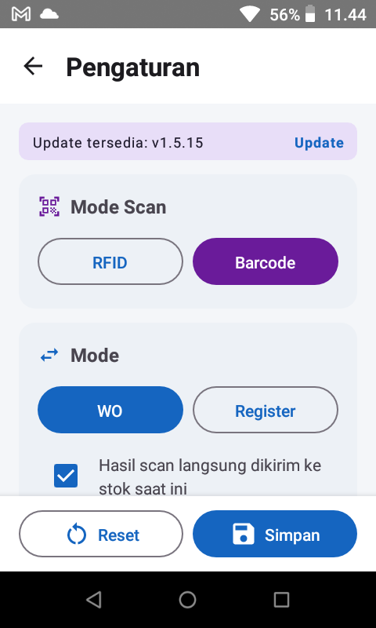
Mode Scan — tombol Barcode dipilih (berwarna ungu)
Saat Mode Barcode aktif, tampilan Layar Scan berubah warna menjadi aksen ungu agar
operator langsung tahu mode mana yang sedang berjalan tanpa perlu membaca teks.
Cara pakai
1 Buka Pengaturan, di bagian paling atas pilih Mode Scan → Barcode, lalu tekan Simpan.
2 Kembali ke Layar Scan — tampilan akan berubah menjadi tema ungu dengan ikon barcode.
3 Arahkan handheld ke barcode, lalu tahan tombol trigger seperti biasa hingga barcode terbaca.
4 Setiap barcode yang berhasil terbaca langsung dikirim otomatis ke server, satu per satu — tidak perlu menekan Stop terlebih dahulu.
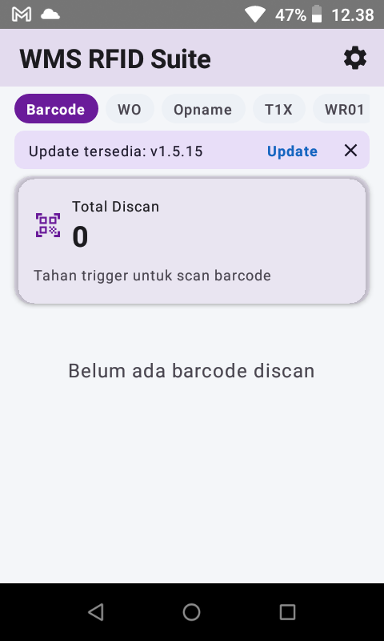 Menunggu scan pertama |
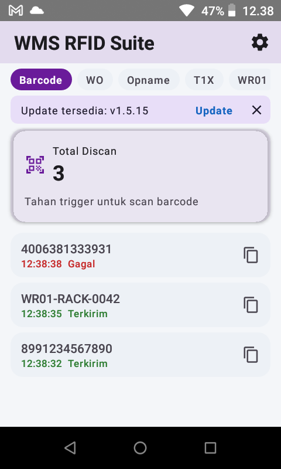 Hasil scan dengan status kirim |
Setiap baris hasil pada Mode Barcode menampilkan kode yang terbaca, waktu scan, dan status
pengiriman: Mengirim…, Terkirim (hijau), atau Gagal (merah).
Perbedaan penting dengan Mode RFID:
- Pengaturan Power (kekuatan pancar RF) otomatis disembunyikan saat Mode Barcode aktif,
karena tidak relevan untuk pemindaian barcode.
- Backup CSV lokal (Bab 10) tidak mencakup hasil Mode Barcode — backup itu khusus
untuk sesi RFID, karena setiap barcode sudah langsung terkirim satu per satu, bukan
dikumpulkan dulu.
7. Mode Pengiriman: WO vs Register
Terlepas dari Mode Scan (RFID/Barcode) di atas, ada satu pengaturan lagi yang menentukan
ke alur bisnis mana hasil scan dikirim: WO atau Register. Diatur dari
Pengaturan → Mode.
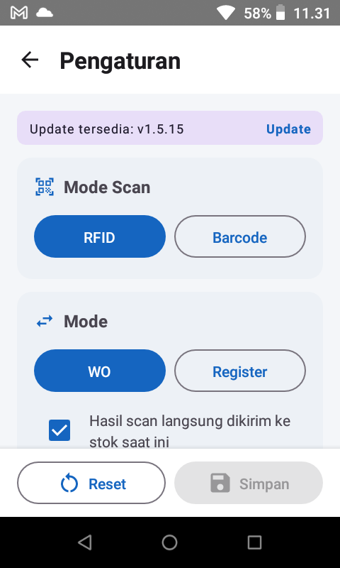
Bagian Mode Scan (atas) dan Mode WO/Register (bawah) di Pengaturan
Kedua mode mengirim data dengan format yang sama persis ke server yang sama — server
membedakannya lewat satu penanda di data yang dikirim, sehingga operator tidak perlu memikirkan
perbedaan teknisnya.
Di bawah tombol WO/Register ada satu centang: "Hasil scan langsung dikirim ke stok saat
ini", tersedia di kedua mode. Jika dicentang, hasil scan tersebut juga langsung
memperbarui stok saat itu juga.
8. Penggantian RFID (Replacement)
Untuk mengganti tag RFID yang rusak atau tidak terbaca lagi — data yang sudah terdaftar
di server pada tag lama dipindahkan ke tag fisik yang baru. Khusus Mode Register: satu
centang tambahan, "RFID Replacement", muncul di bawah centang opname setelah Register
dipilih. Mati secara default.
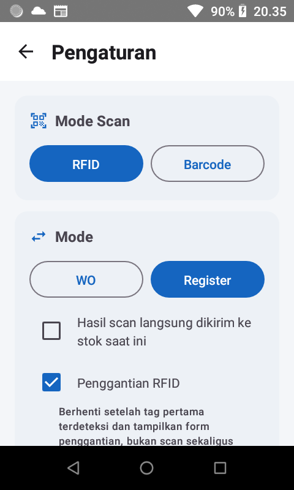
Mode Register dengan centang RFID Replacement
Mencentang RFID Replacement otomatis ikut mencentang "Hasil scan langsung dikirim ke stok
saat ini" (opname) dan menguncinya — tidak bisa disentuh selama Replacement masih
aktif, karena penggantian tag memang selalu berupa update stok. Kembali bisa diubah begitu
Replacement dimatikan lagi.
Begitu centang ini aktif, cara kerja scan berubah total dari alur biasa: begitu satu tag
terdeteksi, scan langsung berhenti seketika dan muncul form — tidak menunggu tag lain, tidak
ada status Mengirim/Terkirim, dan tidak ada yang terkirim ke endpoint yang biasa dipakai.
Cara pakai
1 Di Pengaturan, pilih Mode Register, centang RFID Replacement, lalu tekan Simpan.
2 Kembali ke Layar Scan, tekan Mulai Scan, lalu dekatkan handheld ke tag fisik yang baru (pengganti).
3 Begitu satu tag terbaca, scan otomatis berhenti dan form Ganti Tag RFID muncul.
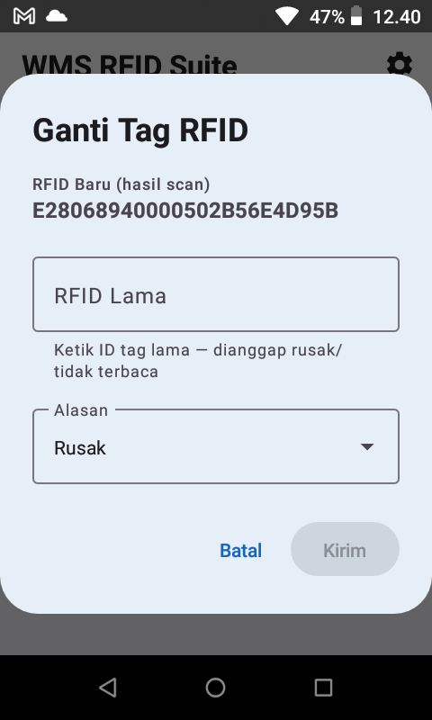 RFID Baru terisi otomatis (hasil scan) |
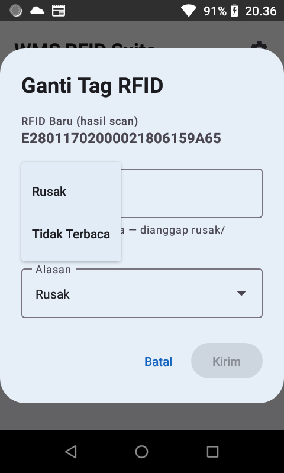 Alasan: dua pilihan tetap |
- RFID Baru — hanya-baca, ini adalah tag yang baru saja terbaca
- RFID Lama — diisi manual dengan mengetik, karena tag lama dianggap rusak/tidak
terbaca sehingga tidak bisa di-scan
- Alasan — dropdown dengan dua pilihan tetap: Rusak atau Tidak
Terbaca
- Kirim — baru bisa ditekan setelah RFID Lama diisi, dan selama Factory Code
(beserta ID-nya) sudah tersimpan di Pengaturan — jika belum, form menampilkan pesan untuk
membuka Pengaturan dan memeriksa Base URL. Jika gagal, form tetap
terbuka dengan pesan kegagalan (format sama seperti Bab 4) sehingga bisa langsung dicoba lagi
tanpa perlu scan ulang. Jika berhasil, form tertutup otomatis dan daftar tag dikosongkan, siap
untuk penggantian berikutnya.
- Batal — membatalkan, tag yang terbaca dibuang begitu saja
Setiap percobaan (berhasil maupun gagal) tetap tercatat di Pengaturan → Riwayat Log
(Bab 12.7), sama seperti pengiriman lainnya.
9. Scan Latar Belakang & Bulatan Mengambang
Fitur ini mati secara default. Jika diaktifkan lewat Pengaturan → Scan Latar
Belakang, dua hal berubah:
1 Tombol trigger fisik tetap berfungsi walau aplikasi tidak sedang dibuka di layar — misalnya sambil membuka Chrome atau aplikasi WMS lain. Jika fitur ini mati, trigger hanya berfungsi saat aplikasi sedang tampil di layar.
2 Muncul bulatan status mengambang di atas aplikasi lain. Bulatan ini bisa digeser ke mana saja, dan diketuk untuk langsung kembali ke aplikasi.
Warna bulatan menunjukkan status tanpa perlu membaca teks:
| Warna | Artinya |
|---|
| Abu-abu | Diam — tidak sedang scan |
| Biru | Sedang scan — menampilkan jumlah tag unik yang sudah terbaca |
| Hijau | Scan terakhir berhasil terkirim — menampilkan jumlah tag yang terkirim |
| Merah | Scan terakhir gagal terkirim |
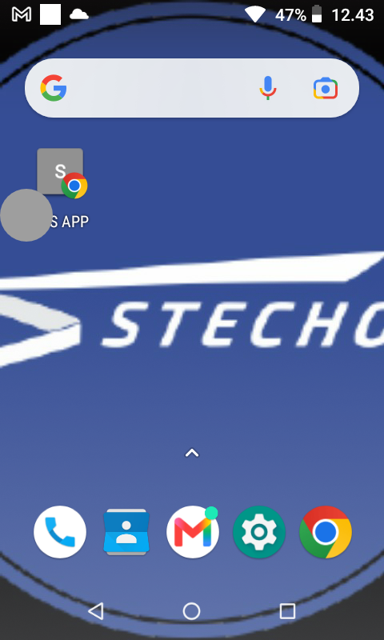 Diam, di atas layar utama HP |
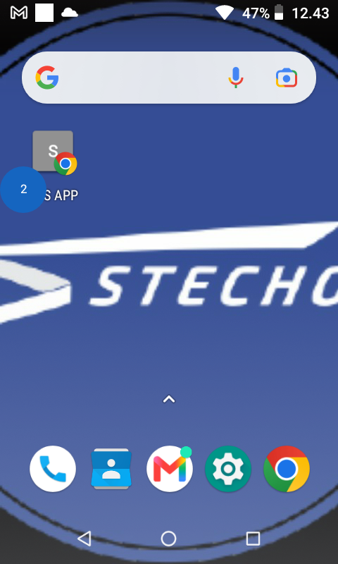 Sedang scan, jumlah tag berjalan |
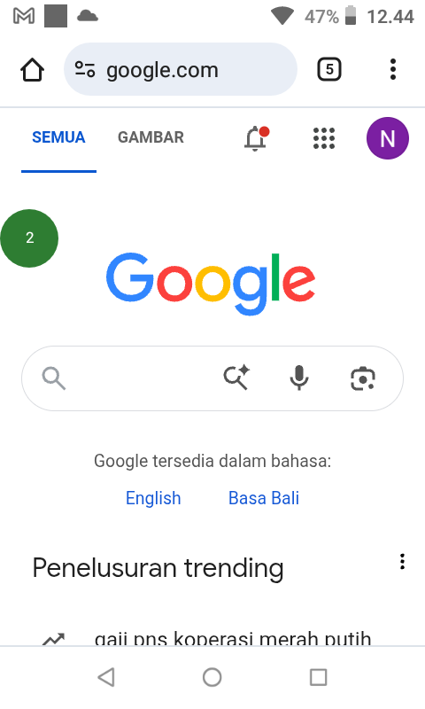 Di atas Chrome, hijau setelah terkirim |
Mengaktifkan fitur ini akan meminta izin Android "Tampil di atas aplikasi lain" —
cukup disetujui satu kali per perangkat. Karena fitur ini menjalankan layanan latar belakang,
akan selalu muncul notifikasi kecil "Background scanning active" di status bar selama
fitur ini aktif — ini adalah ketentuan standar Android, bukan bug.
10. Backup CSV Lokal
Fitur ini menyala secara default, diatur lewat Pengaturan → Backup Lokal.
Setiap kali sesi scan RFID berhenti — berhasil terkirim maupun tidak — seluruh daftar
tag pada sesi tersebut otomatis disimpan ke file CSV di penyimpanan perangkat. Fitur ini adalah
jaring pengaman apabila koneksi WiFi gudang sedang tidak stabil.
File tersimpan otomatis di folder:
Android/data/com.stechoq.wms/files/rfid_stc/
satu file per sesi scan, dengan nama scan_YYYYMMDD_HHMMSS.csv, berisi kolom:
epc, first_seen, last_seen, read_count, antenna, rssi, is_new.
Backup ini hanya berlaku untuk sesi Mode RFID. Hasil Mode Barcode (Bab 6) tidak
dibackup ke CSV karena setiap kode sudah langsung dikirim satu per satu ke server.
11. Update Aplikasi Otomatis
Aplikasi secara otomatis memeriksa versi terbaru setiap kali dibuka, dan setiap kembali ke
layar depan (paling cepat setiap 5 menit sekali). Jika tersedia versi baru, muncul banner tipis
satu baris di Layar Scan:
Banner "Update tersedia" di Layar Scan |
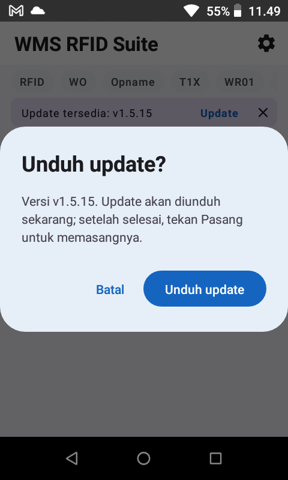 Konfirmasi sebelum mengunduh |
1 Tekan Update, lalu Unduh update pada konfirmasi yang muncul (Batal tidak mengubah apa pun — konfirmasi ini mencegah unduhan karena salah ketuk).
2 Setelah selesai diunduh, tekan Pasang — ini akan membuka pemasang aplikasi bawaan Android.
3 Khusus pemasangan pertama kali di sebuah perangkat, Android mungkin menampilkan layar izin "Izinkan pemasangan dari aplikasi ini" — cukup disetujui satu kali, bukan setiap update.
Belum ingin update sekarang? Tekan ✕ (Nanti) di ujung banner. Banner disembunyikan
untuk versi tersebut sampai aplikasi ditutup lalu dibuka lagi, atau sampai ada versi yang lebih
baru. Selama tersembunyi, muncul titik merah kecil di ikon Pengaturan — banner yang sama
(tanpa ✕) ada di bagian paling atas Pengaturan, dan baris versi di paling bawah Pengaturan
menulis "Update tersedia: v…", sehingga update tetap bisa dimulai dari sana.
Tidak perlu laptop, kabel data, atau transfer APK manual — semua dilakukan langsung dari
handheld lewat internet.
Khusus sekali saja, saat rebranding ke WMS RFID Suite: aplikasi lama ("Stechoq RFID
Suite") tidak bisa ter-update otomatis ke versi baru ini, karena identitas aplikasinya berubah
total di sisi Android. Tim IT perlu meng-uninstall aplikasi lama lalu memasang APK baru secara
manual satu kali di setiap handheld — Pengaturan pada handheld tersebut perlu diisi ulang
setelahnya. Setelah proses ini selesai, update otomatis berjalan normal kembali seperti biasa.
12. Panduan Lengkap Pengaturan
Bab ini menjelaskan setiap bagian di menu Pengaturan, dari atas ke bawah. Bagian ini
biasanya hanya perlu disentuh sekali oleh admin/IT saat konfigurasi awal sebuah handheld.
12.1 Mode Scan & Mode
- Mode Scan — RFID / Barcode, lihat Bab 6
- Mode — WO / Register, lihat Bab 7
12.2 Konfigurasi API
- Base URL — alamat server WMS tujuan. Setiap kali diganti, daftar RR Type
dan Factory Code otomatis diambil dari server tersebut: langsung saat dipilih dari daftar,
atau sekitar 1 detik setelah selesai mengetik (hanya untuk alamat yang diawali
http://
atau https://). Di bawah kolom ini tampil statusnya: Mengambil data…,
Terhubung · X RR Type, Y Factory (hijau), atau Gagal mengambil data dari server
(merah) dengan tombol Coba lagi. Jika gagal, daftar lama tetap dipakai dan diberi
keterangan bahwa isinya mungkin dari server sebelumnya.
- Endpoint — jalur API tujuan, biasanya tidak perlu diubah
- Reader ID — hanya-baca, dibuat otomatis dari perangkat sehingga setiap handheld
punya ID unik tanpa perlu diatur manual
- Antenna — nomor antena yang dipakai
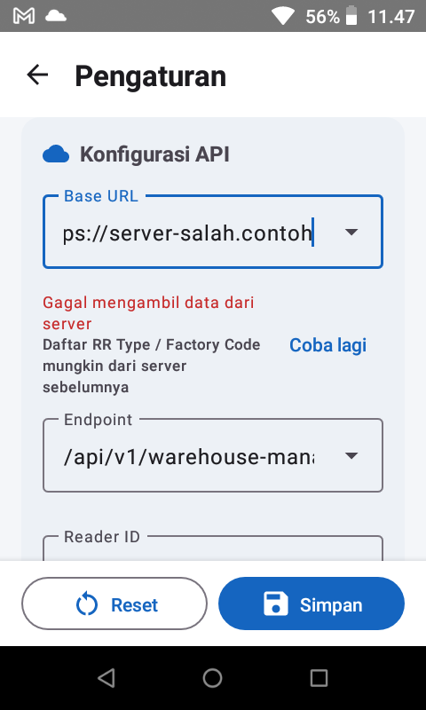
Gagal mengambil data — daftar lama tetap dipakai, tekan Coba lagi
Saat Base URL dipindah ke server lain, RR Type atau Factory Code yang sedang dipilih tetapi tidak
ada di server baru otomatis dikosongkan — supaya kode dari server lama tidak ikut terkirim ke
server baru. Daftar juga otomatis diambil saat Pengaturan dibuka jika daftarnya masih kosong (mis.
setelah Reset atau pemasangan baru).
12.3 Register Configuration
- RR Type dan Factory Code — hanya bisa dipilih dari daftar yang
diambil otomatis dari server (Bab 12.2), tidak bisa diketik manual. Factory Code wajib
dipilih: Simpan ditolak dengan pesan "Factory Code belum dipilih, periksa Base URL"
jika masih kosong.
- Maker Name — diisi manual
- Initial Year — dipilih dari daftar tahun 2000 sampai tahun berjalan (otomatis
mengikuti jam perangkat), atau diketik manual
Semua field ini selalu dikirim ke server terlepas dari Mode WO/Register yang dipilih.
12.4 Power
Mengatur kekuatan pancar RF reader. Rentang nilai mengikuti perangkat aslinya: Chainway
1–30 dBm, Zebra 0–300 (sama seperti aplikasi resmi 123RFID milik Zebra). Bagian ini
otomatis disembunyikan saat Mode Barcode aktif.
12.5 Suara
Bunyi setiap kali tag/barcode berhasil terbaca, sekaligus nada hasil kirim
("tit-tit" = terkirim, tiga bunyi rendah = gagal — lihat Bab 3), bisa dimatikan,
lengkap dengan pengatur volume.
Pada handheld yang punya motor getar, hasil kirim juga ditandai dengan getaran (1 kali = terkirim,
3 kali = gagal), selalu aktif tanpa pengaturan tersendiri. Zebra MC33 tidak memiliki motor getar,
dan motor getar Chainway C72 unit uji tidak bergetar secara fisik — di kedua perangkat ini
hasil kirim dibedakan lewat nada.
12.6 Backup Lokal, Scan Latar Belakang & Bahasa
Lihat Bab 9, Bab 10, dan Bab 13 untuk penjelasan masing-masing.
12.7 Riwayat Log
Tombol ini membuka daftar 30 percobaan pengiriman terakhir (RFID, Barcode, maupun penggantian
RFID), lengkap dengan jenis pengiriman, pengaturan yang dipakai, detail teknis aslinya, dan tombol
Kirim ulang — lihat Bab 4 untuk penjelasan lengkapnya. Riwayat ini tetap tersimpan walau
aplikasi ditutup atau tombol Reset ditekan, karena ini catatan diagnostik, bukan bagian dari
pengaturan.
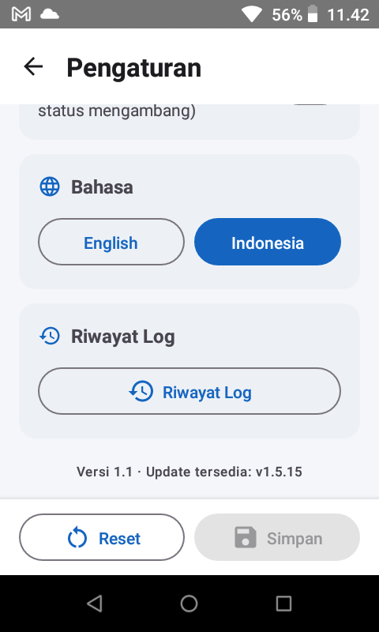 Tombol Riwayat Log |
Isi riwayat, dengan detail teknis lengkap |
12.8 Reset & Simpan
Tombol Reset dan Simpan berada di bar bawah yang selalu terlihat, tanpa perlu
menggeser layar. Versi aplikasi yang terpasang ditampilkan di paling bawah halaman.
- Reset — mengembalikan semua pengaturan di atas ke nilai bawaan (tidak pernah
mengubah pilihan jenis perangkat atau bahasa), setelah konfirmasi "Reset pengaturan?"
(Batal / Reset merah). Batal tidak mengubah apa pun.
- Simpan — memvalidasi lalu menyimpan seluruh perubahan; tombol ini nonaktif
(abu-abu) selama belum ada yang diubah.
- Perubahan belum disimpan — jika keluar dari Pengaturan (panah kembali atau tombol
back Android) padahal ada yang diubah, muncul pertanyaan "Simpan perubahan?":
Simpan (validasi tetap berlaku — jika gagal, tetap di Pengaturan dan kesalahannya
ditampilkan), Buang, atau Batal. Jika tidak ada perubahan, langsung keluar.
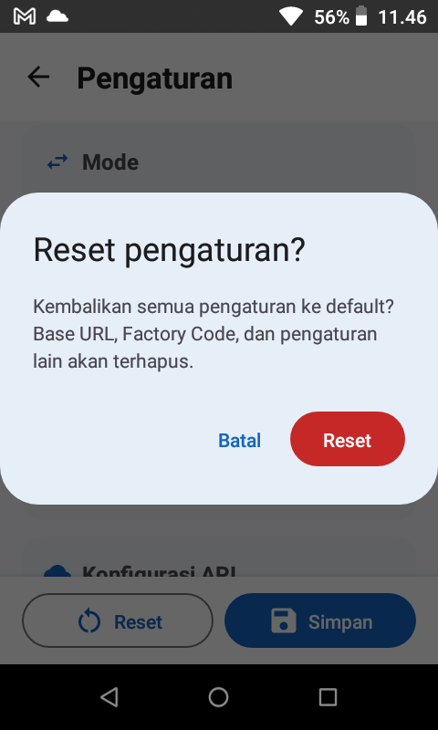 Konfirmasi Reset |
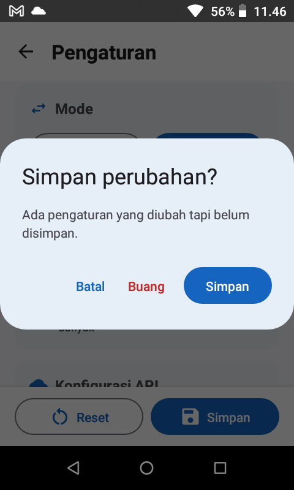 Keluar tanpa menyimpan |
13. Bahasa Aplikasi
Tersedia dalam Bahasa Indonesia dan Inggris, bisa diganti kapan saja lewat menu Pengaturan,
dan berlaku instan ke seluruh layar — termasuk notifikasi dan pesan validasi. Secara
bawaan, aplikasi terpasang dalam Bahasa Inggris hingga diganti manual.
14. Pemecahan Masalah (Troubleshooting)
| Gejala | Penjelasan & solusi |
|---|
| Muncul pesan error terkait charging saat scan RFID (khusus Zebra) |
Sebagian unit Zebra menolak memulai scan RFID saat merasa sedang di-charge, termasuk saat
tersambung ke dock USB/adb. Ini bukan bug — lepas dari charger lalu coba lagi. |
| Laser barcode ikut menyala saat scan RFID (khusus Zebra) |
Mesin barcode DataWedge milik Zebra kadang mengambil alih tombol trigger saat aplikasi lain
yang punya profil DataWedge sendiri (mis. browser) tampil di depan. Aplikasi ini otomatis
menonaktifkan DataWedge setiap kali Mode RFID aktif. Jika terus berulang di satu unit tertentu,
laporkan ke tim IT sebagai kemungkinan masalah profil DataWedge di unit tersebut. |
| Trigger memicu pemindai barcode (lampu menyala, berhasil membaca) tapi hasilnya tidak
pernah muncul di aplikasi (Mode Barcode, khusus Zebra) |
Ini adalah masalah konfigurasi profil DataWedge di sistem — hasil scan terkirim ke
profil lain, bukan ke aplikasi ini. Laporkan ke tim IT; solusinya bersifat teknis di sisi
sistem, bukan sesuatu yang bisa diperbaiki operator sendiri di lapangan. |
| Update tidak mau terpasang |
Bisa terjadi jika perangkat pernah dipasangi APK versi uji coba/manual oleh tim IT. Hubungi
tim IT untuk memasang ulang aplikasi ke versi resmi. |
| Unduhan update terhenti/timeout |
Aplikasi mengunduh file update (beberapa MB) lewat jaringan handheld; pada WiFi gudang yang
lambat, percobaan pertama kadang gagal. Tekan Coba lagi pada banner update untuk mencoba
ulang. |
| Pesan gagal kirim "Gate not found for the given reader_id and antenna" |
Server WMS belum mengenali handheld ini: kombinasi Reader ID (lihat Pengaturan →
Konfigurasi API) dan Antenna belum didaftarkan sebagai Gate. Minta admin WMS mendaftarkannya;
setelah itu tekan Kirim Ulang. |
| Di bawah Base URL muncul "Gagal mengambil data dari server" |
Handheld tidak bisa menjangkau server: periksa koneksi WiFi (matikan lalu nyalakan lagi WiFi
jika status tersambung tapi tidak ada internet) dan penulisan Base URL, lalu tekan Coba
lagi. |
| Simpan Pengaturan ditolak: "Factory Code belum dipilih, periksa Base URL" |
Factory Code wajib dipilih. Pastikan status di bawah Base URL Terhubung, lalu pilih
Factory Code dari daftar. |
| Pesan gagal kirim hanya menampilkan "Terjadi kesalahan sistem, silakan hubungi Tim WMS" tanpa
detail |
Ini disengaja (lihat Bab 4) — detail teknis aslinya tidak hilang, cek
Pengaturan → Riwayat Log (Bab 12.7) untuk melihatnya sebelum menghubungi Tim WMS. |